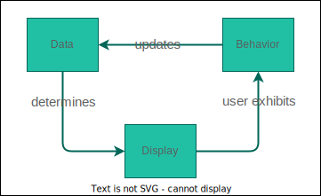

State & Events
✅ Objectives
- Explain the importance of state
- Explain the difference between state and props
- Observe how to use the useState hook
- Observe how to use DOM events in React
Why is state important?
🏹 Props are passed from the parent component, state is internal to a component.
🏹 Values stored in state are meant to change, especially in response to user behaviors (as the user interacts with the DOM and triggers events).
🏹 We can do conditional rendering based on state values. This is a key component of declarative programming in React: we tie our components to our state by integrating state values into our JSX rendering logic. This way, changes in state eventually cause changes to the DOM (Updating the Dark Mode button!).
React Flow
🏹 To work with state in a functional component, we use the useState hook
Local Variables vs State Variables
Handling events in React
Event handlers can only be attached to DOM elements, we can’t attach event listeners directly to our components
Doesn’t work:
function Button() {
return (
<button>
Click Me
</button>
);
};
<Button onClick={() => console.log('clicked!')}>
Click Me
</Button>
Does work
function Button({ onClick }) {
return (
<button onClick={onClick}>
Click Me
</button>
);
};
<Button onClick={() => console.log('clicked!')}>
Click Me
</Button>
Defining Event Handlers
We can also define event handler functions within our components and pass the function reference to our event listener in the JSX.
function Counter() {
const [count, setCount] = useState(2);
const handleDecrement = (event) => {
if(count > 0) {
setCount(count => count - 1);
}
}
return (
<div>
{count}
<button onClick={handleDecrement}>-</button>
</div>
);
};
This is helpful in the case where we need to introduce additional event handling logic. We can do so without cluttering our JSX.
✅ Toggle Dark Mode Button
Inside the Header component, there is a button with textContent of Light Mode
<button>Light Mode</button>
Attach an onClick event to the button:
<button onClick={() => console.log("clicked")}>Light Mode</button>
We can also also refactor using a helper function:
const handleClick = () => console.log('clicked')
<button onClick={handeClick}>Light Mode</button>
💡 We need to now figure out how to properly set new text for the button and perform DOM manipulation to reflect the change. That is where state will come in.
Passing State as Props

☕️ Break!!! ☕️
Filter by project name in ProjectList component
Currently, we are creating a ProjectCard component for each project inside of the projects array:
const renderedProjects = projects.map(project => {
return <ProjectCard key={project.id} project={project} />
})
We need to make this dynamic by implementing a filter feature that returns the projects based on the user’s entry in the search input
<input type="text" placeholder="Search..." />
Filter by project name in ProjectList component steps:
- Initialize state to track the
searchQuery:
const [searchQuery, setSearchQuery] = useState("");
- Add on
onChangeevent to the input element:
<input onChange={handleSearch} type="text" placeholder="Search..." />
- Update the state in the
handleSearchhelper function:
const handleSearch = (e) => setSearchQuery(e.target.value);
Filter by project name in ProjectList component steps contd:
- Filter the
projectsarray to return the search results based on thesearchQueryvalue:
const searchResults = projects.filter((project) =>
project.name.toLowerCase().includes(searchQuery.toLowerCase())
);
- Map over
searchResultsinstead ofprojectswhen creatingrenderedProjects:
const renderedProjects = searchResults.map(project => {
return <ProjectCard key={project.id} project={project} />
})
Note: If the searchQuery is an empty string, the filter() will return all the project items
💡 Conclusion
Events and state are both important and can work together to allow the DOM to reflect a users interactions and activities by:
-
Attaching events to parts of our JSX
-
Updating the state based on the goal of the event
-
State change forces a re-render that will cause DOM manipulation and reflect the changes on the interface